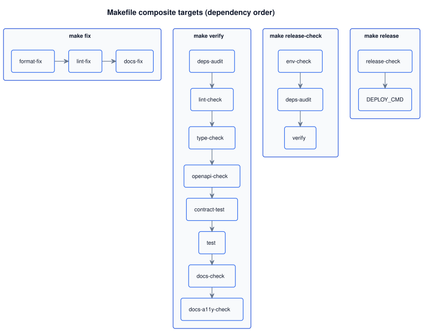

Targets grouped by job, diagrams for the composite pipelines, and an
if → then table for common tasks. The full target list lives in
make help. Governing policy:
ADR 0008.
Recommended entry points (start here)
Most days you only need one of these. The lifecycle row (up / down / logs / status) starts and stops the whole running stack; the quality row (fix / verify / release-check) wraps the atomic targets (format, lint, tests, OpenAPI, docs).
Command
Use when
Outcome
make up
You want the whole thing running locally — API, monitoring, portal.
Boots api (docker, migrations applied on start), Prometheus, Grafana, Blackbox, and a portal static server. Prints all URLs at the end.
make down
Stop everything (preserve docker volumes).
Kills portal server, then docker compose down. Add -volumes variant to wipe Prometheus/Grafana data.
make logs
Tail api + monitoring logs.
docker compose logs -f --tail=100 (portal logs go to .runtime/portal.log).
make status
Check what's up, what's down, and the URL cheat-sheet.
A visual walk-through of the one-shot lifecycle. Two lanes fan out from the same command — a docker lane that builds and boots four containers (with migrations), and a host lane that runs the portal's static server — then converge on a URL banner you can click.
LifecycleWhat happens between «Enter» and the URL banner
ActorYouA developer at a terminal in the repo root. Docker Desktop is running; .env exists (created once by make setup).
type make up
Step 1 · OrchestrateMakefile plans two lanesReads the root docker-compose.yml (which includes the observability stack) and fans out into a docker lane and a host lane. Both run without blocking each other.
fan out — two lanes in parallel
Lane A · DockerBuild image + boot 4 containersRebuilds study-app-api:local from services/api/Dockerfile (Docker layer cache keeps this quick), then starts all four services detached. The API entrypoint runs alembic upgrade head before Uvicorn, so migrations are always applied on a fresh boot — no separate make migrate needed.
study-app-api :8000
study-app-prometheus :9090
study-app-grafana :3010
study-app-blackbox :9115
at the same time
Lane B · HostPortal static server (background)Checks port 8080 is free, then launches python3 -m http.server -d services 8080 via nohup. PID goes to .runtime/portal.pid, logs to .runtime/portal.log (both gitignored). No container — just a plain Python process on the host.
portal :8080
both lanes converge
Step 2 · AnnouncePrint the URL bannerThe Makefile prints all five endpoints in the terminal so you can click straight into the app — no need to remember ports.
Stack is up.
API http://127.0.0.1:8000
Portal http://127.0.0.1:8080/portal/
Grafana http://127.0.0.1:3010
Prometheus http://127.0.0.1:9090
Blackbox http://127.0.0.1:9115
open a URL
ActorYou, back in the loopClick any URL from the banner. For active API coding switch to make run — that starts uvicorn locally with --reload, so edits are picked up instantly. Stop the stack with make down when you're done.
optional · heavier telemetry
SidecarBring up ES + Kibana + FilebeatThe full logging stack is intentionally NOT part of make up — it costs ~2 GiB of RAM. Opt in with make logging-up when you need Kibana search over local NDJSON logs; stop it with make logging-down.
Elasticsearch :9200
Kibana :5601
Docker volumes for Prometheus and Grafana persist across make down; wipe them with make down-volumes. The PostgreSQL data volume (./var/postgres/) is separate from the observability volumes and survives make down by design.
Composite pipelines (diagram)
The diagram below shows how the composite quality targets depend on each other. Arrows mark the order.

When to use make run instead of make up
Both start the API. Pick based on what you're doing:
make up — «just start everything, I want to poke at Grafana / the portal / the API together». Runs the API from a container image — edits to Python require make down && make up to rebuild.
make run — active API coding. Runs uvicorn on the host with --reload, so a saved .py file restarts the server in ~1 second. Migrations run first. Monitoring is not started; if you need Grafana too, run make -C services/monitoring up in another shell.
Details and ports: Local development. Load testing: API load testing.
Commands by theme (reference)
Atomic targets you can run on their own. Composite targets live in Composite pipelines.
Environment and dependencies
Target
Role
setup
One-shot first-time setup — creates .venv, installs deps, copies env/example to .env if missing.
venv, install
Create .venv or install pinned deps into it (individual steps that setup composes).
Tail docker logs / show what's running + URL cheat-sheet.
run
Local uvicorn with --reload. Runs alembic upgrade head first, then serves the API on the host. Reads .env. Best for active API coding — see run vs up.
migrate
Apply Alembic revisions (equivalent to what run and the container entrypoint do automatically on start).
build
Build the API container image locally: docker build -t study-app-api:local services/api/ (see Docker image and container). make up does this automatically via docker compose --build.
Code quality and contracts
Target
Role
format-fix / format-check
Ruff format.
lint-fix / lint-check
Ruff lint.
type-check
mypy on services/api/app, tests, tools.
dead-code-check
Vulture (optional; not in default PR gate).
openapi-check
Governance lint + canon-parity guard (code vs etr_study_app/merged-spec.json). See runbook 0007.
openapi-regen
Refresh the runtime OpenAPI spec from app.openapi(). Auto-run by docs-fix.
api-mock
Start a mock server for every canon under services/portal/internal/services/api/openapi/*/fragments/, one auto-detected port per canon.
api-check [<resource>]
Validate all OpenAPI canons (or one resource across every canon that has it).
Tests
Target
Role
test
Full pytest run (coverage per pyproject.toml).
test-one path=…
Single file or node — make test-one path=tests/api/v1/test_user_create.py.
Documentation pipeline
Target
Role
docs-fix
Full regeneration pipeline — UML → markers → HTML repair → pdoc → service catalog → Pagefind index (11 steps).
docs-check
Drift gate — fails if docs-fix would change anything.
Per-service gates (each service in the monorepo owns its own Makefile:verify).
sync-staging
Reset local + remote staging to origin/main after a promo-PR merge (ADR 0034 dual-Pages).
If → then (scenarios)
If you…
Then…
Just cloned the repo
make setup, edit .env if needed, then make up.
Want the whole stack running (api + monitoring + portal)
make up — prints all URLs. Stop with make down.
Coding on the API (want hot-reload)
make run for the API; make -C services/monitoring up in a second shell if you also need Grafana.
Want auto-fixes before commit
make fix
Want the full local gate
make verify (same composition as CI).
Changed the API intentionally
Update the canon fragment under openapi/etr_study_app/fragments/, update the code, make openapi-check, then make verify. The public openapi.json refreshes on make docs-fix.
Debug one test
make test-one path=tests/…
Run like the production Docker entrypoint locally
Just make up — the api container uses the same entrypoint as the shipped image (see Docker image and container).
Want logs in Kibana / Elasticsearch locally
make logging-up (~2 GiB RAM), keep LOG_FORMAT=json in .env, create Kibana data view *study-app-logs* — see Local development.
Wipe Prometheus / Grafana data
make down-volumes (Postgres data at ./var/postgres/ is untouched).
Prepare a release
make release-check; deploy with make release DEPLOY_CMD='…'.
Verify
The target you ran exited 0; the last log line is the target's documented success banner (e.g. == VERIFY: SUCCESS ==, == DOCS-FIX: SUCCESS ==, == UP: SUCCESS ==).
make help still lists every target you used — drift between this page and make help means the page is stale (open an ADR).
git status after the target shows only files the target is documented to touch; anything else means the target reached outside its scope.
For composite pipelines (up, verify, fix, release-check), every constituent atomic target also passed — the composite is no greener than its weakest link.
After make up: make status shows all four docker services as running and the portal PID; curl -fsS http://127.0.0.1:8000/live returns 200.